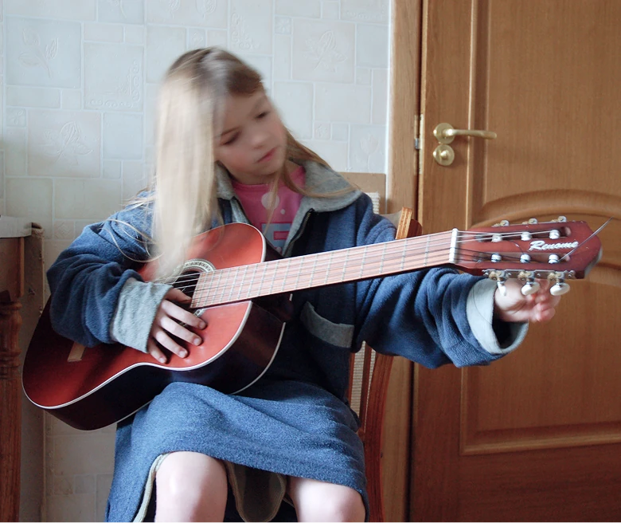
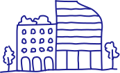
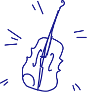
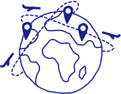

london, uk
ui/ux designer
ex-arch. designer
UI/UX designer, curious mind, and enthusiastic human.
I strive to create emotionally resonant experiences that will
solve problems but also pull at the heartstrings, making
a lasting and memorable impact.


When I was a kid playing in a school band, I wanted to become a rockstar. At least that's what I wrote in my English essay in seventh grade. And then added, "In case that doesn't work out, my second best option would be a web designer."
Since then, I've taken a few detours — a degree in project management, five years in architectural design, and a few wedding gigs — but I've come full circle to those childhood resolutions. I'm not quite a design rockstar (yet) but my twelve-year old self would be proud.

Redesign for a charity foundation to boost donor engagement and donation flows; selected among 15 entries, now in development.
VIEW CASE
Landing page for a stylist to strengthen their personal brand and draw in clients.
VIEW CASE
Redesign for a home appliance store. Improved UI, navigation, and product discoverability.
VIEW CASEMy previous experience in architecture and music performance resulted in a unique blend of skills and strengths I bring to the table:
Rooted in architecture, I design for structure, flow, and how everything holds together when one thing changes (ideally without collapsing).

Developed through composition in architectural drawings, now applied to guiding the eye through intuitive layouts.
Honed in architecture, finding creative solutions while balancing technical requirements, deadlines, and budgets.

Refined through architectural drawing, where accuracy was essential to bring ideas to life. After all, if I can align walls perfectly, I can do so with pixels.
On stage, the goal was to make people feel. In design, it's the same, just with fewer violins.

Years of classical music trained me to recognise rhythm, flow, and repetition. Handy when designing interfaces that shouldn't feel like improvised jazz.
Living abroad made me more aware of how differently people experience the same thing. Now this mindset helps me understand user struggles and frustrations.

Built through adapting to new countries and careers, staying resourceful and focused under uncertainty.
Connect to make this world a better place some memorable and impactful designs that will (hopefully) move it in the right direction.